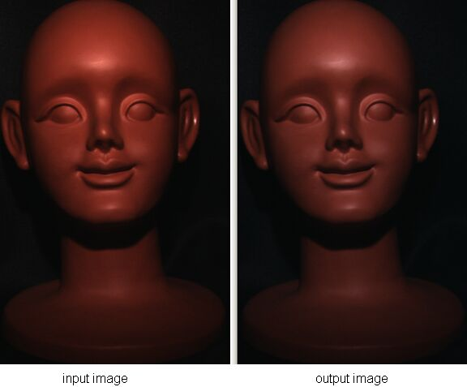
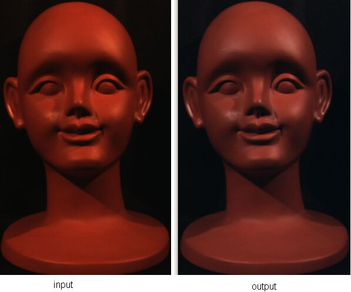
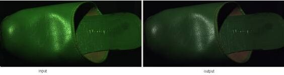
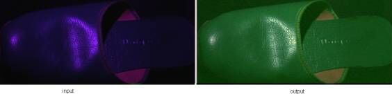
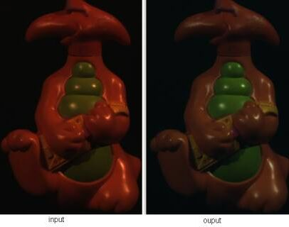
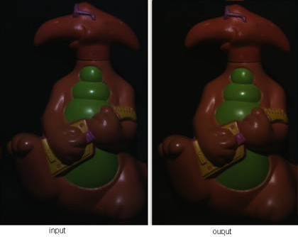
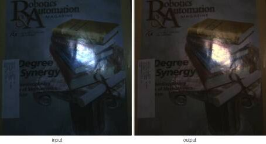
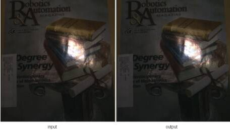
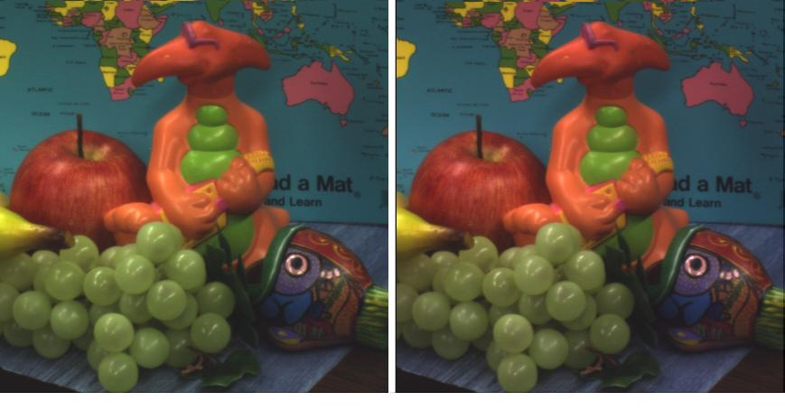

|
Journal of the Optical Society of America A (JOSA A):
"Color Constancy through Inverse-Intensity Chromaticity Space"
[PDF]
Abstract:
Existing color constancy methods cannot
handle both uniform colored surfaces and highly textured surfaces in a
single integrated framework. Statistics-based methods require many surface
colors, and become error prone when there are only few surface colors. In
contrast, dichromatic-based methods can successfully handle uniformly
colored surfaces, but cannot be applied to highly textured surfaces since
they require precise color segmentation. In this paper, we present a
single integrated method to estimate illumination chromaticity from
single/multi-colored surfaces. Unlike the existing dichromatic-based
methods, the proposed method requires only rough highlight regions, without
segmenting the colors inside them. We show that, by analyzing highlights, a
direct correlation between illumination chromaticity and image chromaticity
can be obtained. This correlation is clearly described in
``inverse-intensity chromaticity space'', a new two-dimensional space we
introduce. In addition, by utilizing the Hough transform and histogram
analysis in this space, illumination chromaticity can be estimated
robustly, even for a highly textured surface. Experimental results on real
images show the effectiveness of the method.
"Do not use the images in this website for testing
your code.
The images are compressed images
whose brightness might not be linear to the flux of incoming light.”
1. Uniformly Colored
Surfaces:
(a). Head model illuminated by a halogen lamp:

Estimation results:
Er = 0.3779, Eg = 0.3242, Eb = 0.2866
White Reference: Er = 0.3710,
Eg = 0.31855, Eb = 0.31031
(b) Head model illuminated by
incandescent lamps:

Estimation results:
Er = 0.4613, Eg = 0.3158, Eb = 0.2084
White Reference: Er = 0.502146, Eg = 0.29838, Eb =
0.19946
(c). Green sandal illuminated by a solux halogen covered
by green filter:

Estimation results: Er = 0.3067, Eg = 0.4546, Eb =
0.2404
White Reference: Er = 0.29804, Eg = 0.45807, Eb =
0.24387
(d). Green sandal illuminated by a solux halogen covered by
purple filter

Estimation results: Er = 0.3336, Eg = 0.0584, Eb =
0.5797
White Reference: Er = 0.3336, Eg = 0.06483, Eb =
0.601529
2. Multicolored Surface:
(a). Toy illuminated by incandescent lamps:

Estimation results: Er = 0.5304, Eg = 0.2817, Eb =
0.2262
White Reference: Er = 0.502146, Eg = 0.29838, Eb =
0.19946
(b). Toy illuminated by a halogen lamp covered by blue
filter:

Estimation results: Er = 0.2841, Eg = 0.3160, Eb =
0.3817
White Reference: Er = 0.26335, Eg = 0.2986, Eb = 0.43801
(c). Toy illuminated by a halogen
lamp covered by green filter:
(c). Magazine illuminated by fluorescent lamp covered by
green filter:
Estimation result: Er=0.2969, Eg=0.4877, Eb=0.2299
White reference: Er=0.2828, Eg=0.48119, Eb=0.2359
(d). Magazine illuminated by a halogen covererd by blue
filter:

Estimation results: Er = 0.2440, Eg = 0.3448, Eb =
0.4313
White Reference: Er = 0.26335, Eg = 0.2986, Eb = 0.43801
(d). Magazine illuminated by a
halogen:

Estimation results: Er =
0.3368, Eg = 0.3285, Eb = 0.3410
White Reference: Er = 0.3710, Eg = 0.31855, Eb = 0.31031
(e)
Complex scene illuminated by fluorescent light in uncontrolled environment

Estimation results: Er =
0.3210, Eg = 0.3465, Eb = 0.3093
White Reference: Er = 0.33692, Eg = 0.34071, Eb =
0.31236
|